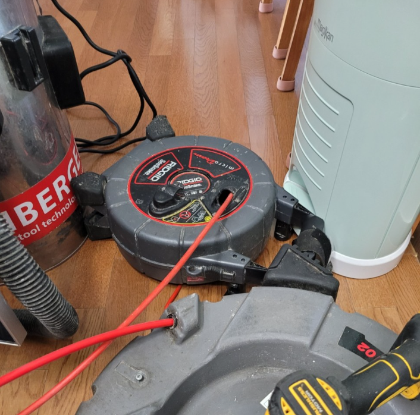
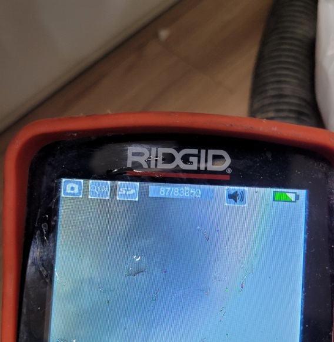

🏠 처인구 싱크대막힘 삼가동 중앙동 모두 다 처리 가능합니다!
용인 중앙동 싱크대막힘 전문 시공 후기

📋 작업 개요
- 위치: 용인 중앙동, 중앙동, 용인
- 서비스 유형: 싱크대막힘, 하수구막힘, 배관막힘, 역류해결, 배관청소, 고압세척
- 작업 일시: 2022. 8. 9. 23:43
- 업체명: 하수구수사대 (010-5615-2118)
🔍 문제 상황
안녕하세요.하수구수사대 입니다.반갑습니다.
일상에서 생기는 다양한 문제 가운데 싱크대 관련 문제는 흔히 일어날 수 있는 일입니다. 그렇기 때문에 미리 대비를 해두는 게 현명한 판단일 수 있습니다. 싱크대 관련 문제는 상가, 매장, 건물 관리 등을 하는 과정에서 주로 발생합니다. 일반 가정집에서도 일어날 수 있는 일이지만 사용량이 비교적 덜하기 때문에 문제가 생기더라도 큰 문제가 아닌 경우가 많습니다. 하지만 업장에서 일어난 문제 같은 경우 생각보다 문제가 심각하여 일반적인 방법으론 해결하기가 어려울 수 있습니다.
처인구 싱크대막힘 삼가동 중앙동 현장을 말씀드려보겠습니다.
처인구 싱크대막힘 삼가동 중앙동 모두 처리 가능합니다. 이런 싱크대 문제를 사전에 방지하고자 한다면 주기적인 청소가 답이 될 수 있습니다. 일반적인 청소도 도움이 되지만 내부 세척을 통해 내부 상태를 깔끔하게 관리하는 게 중요합니다.
싱크대 내부에 이런저런 이물질이 쌓이기 시작하면 막힘 문제를 유발하게 됩니다. 한 번 쌓이기 시작한 이물질은 더 늘어날 가능성이 높습니다. 자리를 잡은 상태에선 더 단단해지기 때문에 물살에도 쉽사리 떠내려가지 않습니다.

🔎 원인 분석
💡 전문가 진단: 처인구 싱크대막힘 삼가동 중앙동 현장을 말씀드려보겠습니다.
처인구 싱크대막힘 삼가동 중앙동 모두 커버 가능합니다.
여름이 되면 이런 막힘 문제가 불쾌감을 유발하게 됩니다. 불쾌지수 자체가 높아진 것도 그러하며 냄새가 역하게 나기 때문입니다. 안 그래도 역한 냄새가 더 심하게 올라오기 때문에 막힘 문제가 심하지 않더라도 당장에 해결하고자 하는 마음이 들 수 있습니다.
내부 세척을 통해 이런 문제를 쉽게 해결할 수 있음을 참고해 주시기 바랍니다. 싱크대 자체적인 문제일 가능성도 있지만 하수관 문제일 가능성도 있기 때문에 공용 배관 등을 확인하는 것도 중요합니다.
처인구 싱크대막힘 삼가동 중앙동 빠른 처리를 목표로 도와드리고 있습니다.
외부에서 이물질이 쌓이기 시작하면 내부와 마찬가지로 안쪽으로 물이 역류하는 현상이 나타날 수 있습니다. 특히 1층에 위치한 건물이라면 이런 역류 현상이 더 심하게 나타날 수 있습니다. 역류 현상은 단순히 물로만 나타나는 게 아닙니다.
앞서 언급한 것처럼 역한 냄새가 올라오는 경우도 있습니다. 썩은 냄새가 더 심해지고 있다면 외부 하수구 문제는 아닌지 전문가를 통해 점검을 해보셔야 합니다.

🔧 작업 과정
장마철이 시작되기 전에 점검하는 것이 좋습니다.
점검 시기를 잡자면 5월, 10월 정도가 되겠습니다. 일반인이 쉽게 확인할 수 없는 하수구 안쪽은 이물질이 가득 찰 수 있습니다. 그로 인해 정상적으로 흘러가야 하는 하수가 흘러가지 못하고 하수구 바깥으로 넘치는 경우도 있습니다.
이런 문제가 더 심해지기 시작하면 집안에 있는 모든 하수구로 역류 현상이 나타날 수 있습니다. 침수 피해를 보지 않기 위해선 미리 점검할 필요가 있는 것입니다.
싱크대 같은 경우 평소 이물질을 흘려보내지 않도록 노력하셔야 합니다.
거름망을 쓰더라도 빠질 수 있기 때문에 이왕이면 더 촘촘한 거름망을 쓰시는 게 좋습니다.
약간은 괜찮겠지란 생각으로 인해 내부에서 퇴적물이 쌓이고 있을 수 있습니다. 특히 기름이 그런 문제를 유발하는 대표적인 원인입니다. 기름은 금방 굳기 때문에 안쪽에서 쉽게 굳습니다. 온도가 식기 시작하면 더 빨리 굳기 때문에 많은 양을 흘려보내선 안됩니다.
가장 확실한 방법은 꾸준히 내부 세척을 해주는 것입니다.
가정에서 쉽게 해볼 수 있는 방법으론 세척용 액체를 이용하는 방법이 있겠습니다. 손이 닿는 겉 부분은 안 쓰는 칫솔을 사용해 닦아주시기 바랍니다. 손이 닿지 않는 안쪽은 액체용 세척제를 사용하여 케어해 주시면 되겠습니다.


✅ 작업 완료
하지만 이것만으론 부족하기 때문에 1~2년에 한 번 정도 따로 관리를 받는 것이 좋습니다. 싱크대를 많이 사용한다면 1년에 두 번 이상 받는 게 적절합니다.
전문가와 충분히 상의한다면 조금 더 안정적으로 싱크대를 사용할 수 있겠습니다.
경기도 용인시 처인구 중부대로1313번길 20-25 2층 202호 나21

⚠️ 주방 싱크대 배관 막힘 예방 수칙
- ✅ 기름기가 묻은 식기나 프라이팬은 설거지 전 키친타올로 반드시 기름때를 닦아내세요.
- ✅ 주기적으로 싱크대 개수대에 뜨거운 물을 가득 받아 한 번에 내려 배관 내부 기름을 씻어내세요.
- ✅ 배수구 거름망을 미세한 필터로 사용하시고 음식물 찌꺼기가 틈으로 새어 들지 않게 관리하세요.
- ✅ 베이킹소다와 식초를 뜨거운 물과 함께 일주일에 한 번씩 부어주면 배관 살균과 막힘 예방에 좋습니다.
💡 핵심 정리
- 확실한 장비 작업(내시경 점검 및 샤프트 스케일링)으로 원인을 뿌리 뽑습니다.
- 작업 후 1년 이내에 동일한 부위 재발 시 100% 무상 A/S 서비스를 보장합니다.
- 서울 · 경기 · 인천 전 지역에 24시간 언제든 긴급 출동할 수 있도록 항시 대기 중입니다.
❓ 자주 묻는 질문 (FAQ)
🚨 용인 중앙동 싱크대막힘 문제로 고민이신가요?
정확한 원인 진단과 확실한 시공으로 재발 없는 해결을 약속드립니다.
24시간 긴급 출동 | 서울 · 경기 · 인천 전지역 | 1년 내 재발 시 무상 A/S